Enivronmenatal Agencies and Organizations
Sierra Club
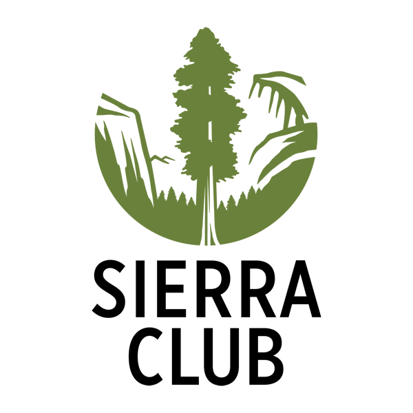
The Sierra Club, founded in 1892, is one of the oldest conversion organizations in existence. With over 1.3 million members, this organization is one of the most effective and powerful at effecting changes in government and coporate America. Fighting for the preservation of land and forest, clean air and water and a host of other issues, the Sierra Club is well-known and respected.
National Audubon Society

The Audubon Society's declared mission is "to conserve and restore natural ecosystems, focusing on birds, other wildlife, and their habitats for the benefit of humanity and the earth's biological diversity" and since the late 1800s the organization has worked hard to achieve its mission.
World Wildlife Fund(WWf)
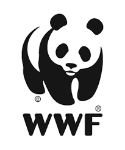
The iconic panda logo has made the WWF instantly recognize to many people around the world. With 5 million members internationally and over 1.2 million in the States, this 45-year-old wildlife defense organization is going h2.h2ly promoting an emphasis on science, the WWF works to preserve nature and its creature.
EarthFirst!
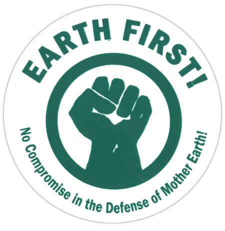
Famously unapologetic, EarthFirst! came to national prominence in the 1990s. EarthFirst! is a little different. There's no slick website. There's no bureacracy. There are no members. They welcome any and all. The entire premise of this biocentric "movement" as it calls itself is to foster direct action. Founded in 1979 out of disgust at corporate environmentalism and "namby pamby" green action, EarthFist!ers have famously gotten involved in green issues directly, sometimes breaking the law.
Greenpeace
Greenpeace began in 1971 when a group of activists put themselves directly in harm's way in order to protest nuclear testing off the coast of Alaska. Believing that concerted action from ordaniary people is the best way-according to their signature quote from, Margaret Mead the only way - the organization has helped to stop whaling, nuclear testing, as well as leading efforts to protect Antarctica. Over 2.5 million members worldwide.
National Wildlife Federation
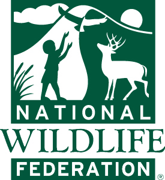
The National Wildlife Federation is dedicated to preserving animals in the United States and works with local agencies in the 48 contiguous states. It is one of the largest enivronmental organizations, with over 4 million members participating in grass-roots efforts on a variety of wildlife issues. The organization was actually founded by a cartoonist named Jay Darling (aka "Ding" Darling) in 1936 at the behest of President Franklin Delano Roosevelt.
Natural Resources Defense Council(NPDC)
According to the offical website "The Natural Resources Defense Council works to protect wildlife and wild places and to ensure a healthy environment for a life on earth." The NRDC combines hundreds of active lawyers with over 1.2 million members to create direct and legislative change. The focus is on preventing climate change and saving endangered species, among other goals.
1% For The Planet
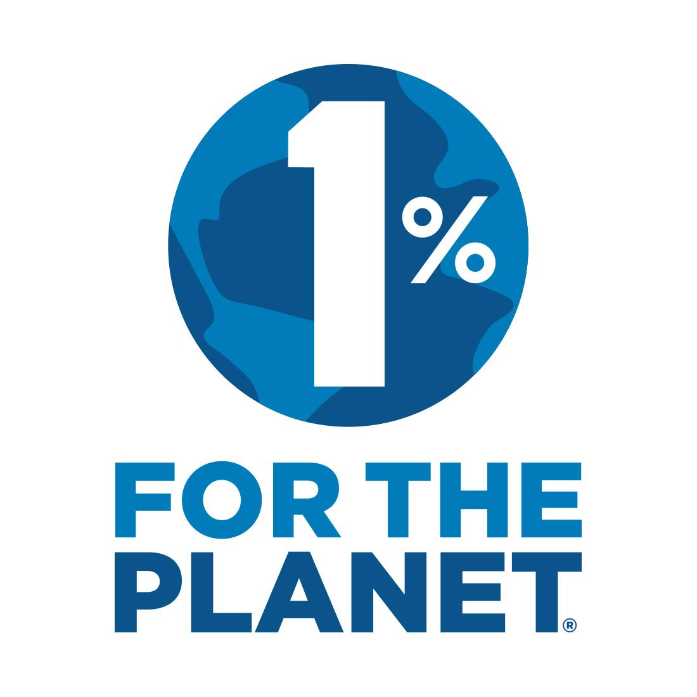
If you've shopped for anything organic or sustainable you've likely seen the 1% logo. With nearly 1,000 firms and companies now participating, 1% is helping corporate interests green their bottom lines by giving back to environmental causes. It's a meaningful start.
Co-Op America
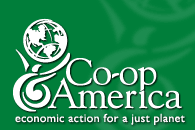
"Economic Action for a Just Planet" is the slogan of this green organization that seeks to empower consumers and harness the power of consumers to make planet sustainable for furture generations. They emphasize economic intiatives and actions over other more traditional environmental actions.
World Business Council for Sustainable Development
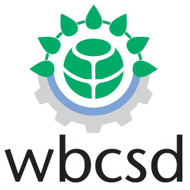
Interested in sustainable development? The World Business Council for Sustainable Development is the place to go online. This is global association of 2000 leading companies states: "Our mission is to provide business leadership" as a catalyst for change toward sustainable development, and to support the business license to operate, innovate and grow in a world increasingly shaped by sustainable development issues." The capitalist's online environmental organization.
Other Organizations
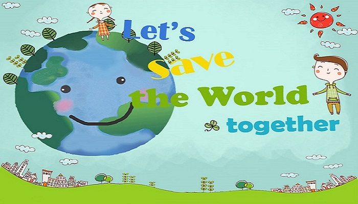
- Forest Stewardship Council
- Rainforest Action Nerwork
- The Nature Conservancy
- Heal the Bay
- Surfrider
- Environmental Defense Fund
- Friends of Earth (FOE)
- Worldwatch Institute
- American Bird Conservancy
- Intergovernmental Panel on Climate Change
- United States Environmental Protection Agency
- Earth Liberation Front
- Wildlife Conservation Society
- Association of Environmental Professionals
- National Geographic Society
Reference: Web Ecoist
Some Famous People who could Save the Planet
- Capt Paul Watson
Marine activist
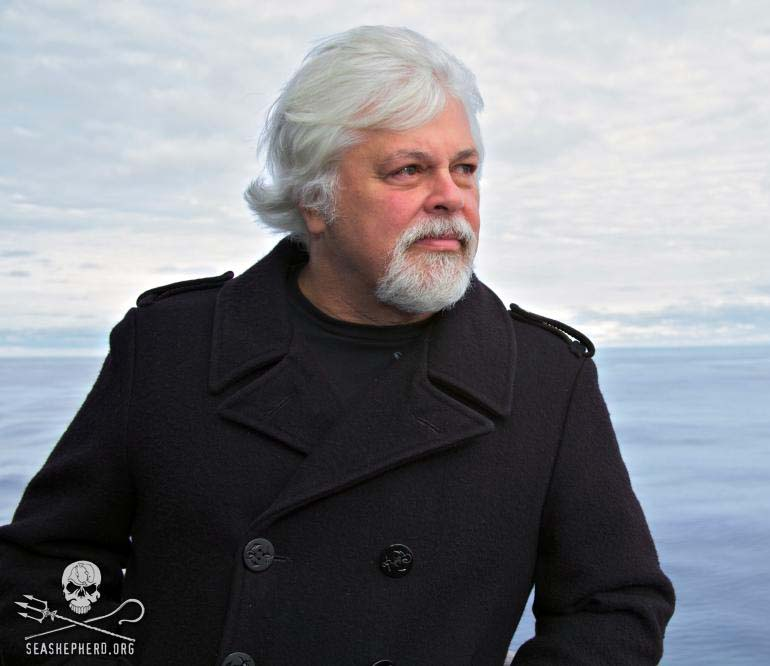
- Paul Watson, 57, is the man Japanese whalers, Canadian seal hunters and illegal fisherman everywhere fear the most. The ultimate direct action man, he co-founded Greenpeace in the 70s and now has two boats that patrol the world's oceans and confront anyone he has evidence of acting criminally. Now he is opening up
a new role for envrionment group. The idea of environmental activists becoming a new green police force may developing in years to come.
- Vicki Buck
Entrepreneur
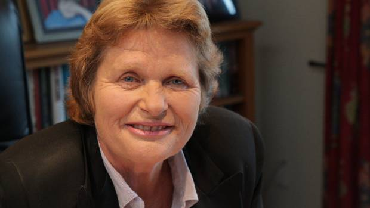
- As the world scrambles to find a fuel supply that doesn't exacerbate global warming, New Zealander Vicki Buck, 51, has emerged as the acceptable face of biofuels. She is one-third of Aquaflow, a small company that was one of the first to crack the technology needed to harvest wild algae from sewage ponds, then extract fuel from its suitable for cars and aircraft.
- Angela Merkel
German Chancellor
- Angela Merkel, 53, has inherited Tony Blair's mantle as the politician forcing climate change that hardest on to the world stage, and she is a formidable advocate. The only major player left who helped hammer out the original global warming agreement at Kyoto in 1997, she is one of the very few with a grasp of what it means of humanity fails. The speed at which Germany under Merkel is pursuing
climate change policies is embarrasing the UK and other countries, which talk up the need for action, but deliver little. "The faster industrialised countries cut their emissions, the more willing other countries will be to do theire bit" Merkel says.
- Bob Hertzberg
Financier
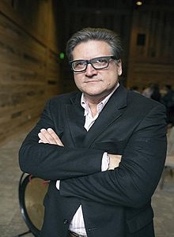
- Bob Hertzberg, 53, founder of venture capital firm Renewable Capital, is one of a new breed of financier piling unprecedented amounts of money into renewable technologies. He ran for mayor of Los Angeles in 2005, finishing in third place.
- Gavin Schmidt
Climatologist
- Gavin Schmidt, 38 and British, is a climate modeller at the Nasa Goddard Institute for Space Studies in New York. He founded RealClimate.org with collegues in 2004. Offering "climate science from climate scientists," the site has quickly become a must-read for interested amateurs, and a perfect foil to both the climate sceptic misinformation that saturates sections of the Web and the overexcitement of the claims of some environmentalists.
Reference: TheGuardian